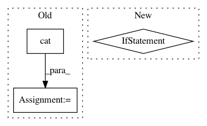

5c38bd81f92f4fb3dc29c8a69c84027b95d694af,torchnlp/nn/sru.py,SRU_Compute,backward,#SRU_Compute#Any#Any#,415
Before Change
def backward(self, grad_h, grad_last):
if self.bidirectional:
grad_last = torch.cat((grad_last[0], grad_last[1]), 1)
bidir = 2 if self.bidirectional else 1
u, x, bias, init, mask_h = self.saved_tensors
c = self.intermediate
length = x.size(0) if x.dim() == 3 else 1
After Change
// Normal use
grad_x = x.new(*x.size()) if k_ == 3 else None
if k_ == 3:
x_ptr = x.contiguous() * scale_x if scale_x != 1 else x.contiguous()
x_ptr = x_ptr.data_ptr()
else:
x_ptr = 0
stream, _, _, bwd_func, bibwd_func = self.get_functions()
FUNC = bwd_func if not self.bidirectional else bibwd_func
FUNC(
args=[
In pattern: SUPERPATTERN
Frequency: 3
Non-data size: 3
Instances
Project Name: PetrochukM/PyTorch-NLP
Commit Name: 5c38bd81f92f4fb3dc29c8a69c84027b95d694af
Time: 2018-03-31
Author: petrochukm@gmail.com
File Name: torchnlp/nn/sru.py
Class Name: SRU_Compute
Method Name: backward
Project Name: OpenNMT/OpenNMT-py
Commit Name: c048078187945e1defb8abc3246cd305fb038c6a
Time: 2017-01-11
Author: alerer@fb.com
File Name: OpenNMT/onmt/Models.py
Class Name: Decoder
Method Name: forward
Project Name: OpenNMT/OpenNMT-py
Commit Name: 26421ce20c6b626ceacafbb3282cad1d5dce04ca
Time: 2017-07-30
Author: bpeters@coli.uni-saarland.de
File Name: onmt/Models.py
Class Name: Embeddings
Method Name: forward